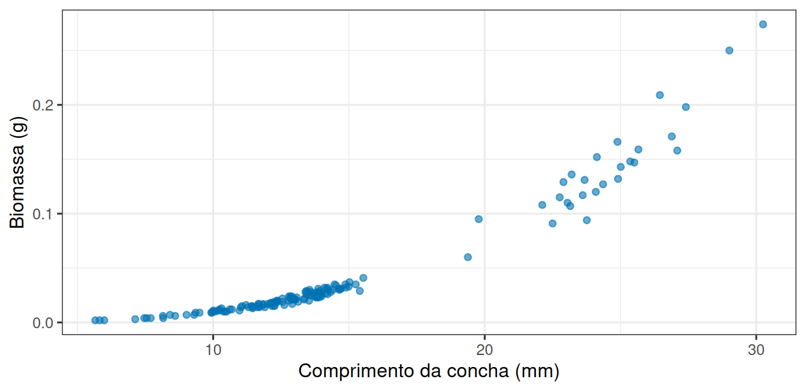
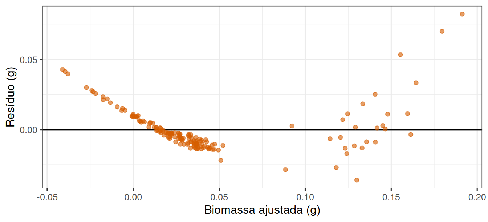
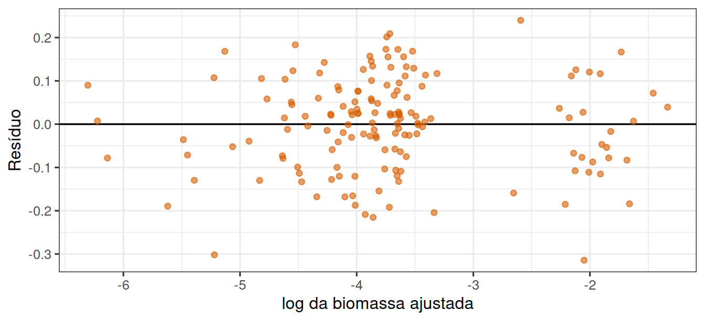

library(tidyverse)
theme_set(theme_bw(base_size = 12))Uma reta para dados costeiros
Prática em R
1 Quanto pesa um molusco de 20 mm?
Moluscos maiores pesam mais, e isso ninguém duvida. A pergunta útil é outra: quanto a biomassa aumenta por milímetro de concha, e com que precisão conseguimos prever a biomassa de um indivíduo a partir do seu comprimento.
Nesta prática o preditor é contínuo: não há grupos a comparar, e sim uma relação a descrever.
2 Vamos abrir os dados
url <- "https://raw.githubusercontent.com/FCopf/datasets/refs/heads/main/zuur-2009-data-sets/Clams.txt"
moluscos <- read_tsv(url, show_col_types = FALSE)
glimpse(moluscos)Rows: 398
Columns: 5
$ MONTH <dbl> 11, 11, 11, 11, 11, 11, 11, 11, 11, 11, 11, 11, 11, 11, 11, 1…
$ LENGTH <dbl> 28.38, 16.57, 13.69, 17.44, 11.83, 28.13, 32.58, 15.70, 18.73…
$ AFD <dbl> 0.248, 0.052, 0.028, 0.070, 0.022, 0.187, 0.361, 0.050, 0.087…
$ LNLENGTH <dbl> 3.346, 2.808, 2.617, 2.859, 2.471, 3.337, 3.484, 2.754, 2.930…
$ LNAFD <dbl> -1.394, -2.955, -3.572, -2.655, -3.826, -1.679, -1.020, -3.00…As colunas que interessam são LENGTH (comprimento da concha, em mm) e AFD (biomassa livre de cinzas, em gramas). MONTH indica o mês de coleta.
Para começar com uma pergunta simples, vamos ficar em um mês só:
abril <- moluscos |> filter(MONTH == 4)
nrow(abril)[1] 1543 Como as duas variáveis se relacionam?
ggplot(abril, aes(x = LENGTH, y = AFD)) +
geom_point(alpha = 0.6, colour = "#0072B2") +
labs(x = "Comprimento da concha (mm)", y = "Biomassa (g)")
4 Ajustando uma reta assim mesmo
A função lm() ajusta um modelo linear. A fórmula tem a resposta à esquerda e o preditor à direita:
modelo <- lm(AFD ~ LENGTH, data = abril)
summary(modelo)
Call:
lm(formula = AFD ~ LENGTH, data = abril)
Residuals:
Min 1Q Median 3Q Max
-0.035981 -0.009953 -0.003696 0.005244 0.082692
Coefficients:
Estimate Std. Error t value Pr(>|t|)
(Intercept) -0.0945348 0.0038839 -24.34 <2e-16 ***
LENGTH 0.0094493 0.0002544 37.14 <2e-16 ***
---
Signif. codes: 0 '***' 0.001 '**' 0.01 '*' 0.05 '.' 0.1 ' ' 1
Residual standard error: 0.01624 on 152 degrees of freedom
Multiple R-squared: 0.9007, Adjusted R-squared: 0.9001
F-statistic: 1379 on 1 and 152 DF, p-value: < 2.2e-16Na tabela de coeficientes, (Intercept) é o valor esperado quando o comprimento é zero e LENGTH é a inclinação: quanto a biomassa esperada muda a cada milímetro a mais de concha.
coef(modelo) (Intercept) LENGTH
-0.094534750 0.009449337 confint(modelo) 2.5 % 97.5 %
(Intercept) -0.102208205 -0.08686130
LENGTH 0.008946654 0.00995202O R-squared da saída indica a proporção da variação da biomassa que acompanha a variação do comprimento. Aqui ele é alto.
5 O que os resíduos dizem?
diagnostico <- tibble(
ajustado = fitted(modelo),
residuo = residuals(modelo)
)
ggplot(diagnostico, aes(x = ajustado, y = residuo)) +
geom_hline(yintercept = 0, linewidth = 0.6) +
geom_point(alpha = 0.6, colour = "#D55E00") +
labs(x = "Biomassa ajustada (g)", y = "Resíduo (g)")
6 E se mudarmos a escala?
Relações entre tamanho e massa em organismos costumam ser multiplicativas: a massa cresce aproximadamente com uma potência do comprimento. Tomar o logaritmo dos dois lados transforma essa relação em uma reta.
Os dados já trazem as colunas transformadas, LNLENGTH e LNAFD, mas podemos criá-las para deixar claro o que está sendo feito:
abril <- abril |>
mutate(
log_comprimento = log(LENGTH),
log_biomassa = log(AFD)
)ggplot(abril, aes(x = log_comprimento, y = log_biomassa)) +
geom_point(alpha = 0.6, colour = "#0072B2") +
geom_smooth(method = "lm", se = FALSE, colour = "black", linewidth = 0.8) +
labs(x = "log do comprimento (mm)", y = "log da biomassa (g)")
modelo_log <- lm(log_biomassa ~ log_comprimento, data = abril)
summary(modelo_log)
Call:
lm(formula = log_biomassa ~ log_comprimento, data = abril)
Residuals:
Min 1Q Median 3Q Max
-0.314399 -0.074571 0.009997 0.077019 0.239888
Coefficients:
Estimate Std. Error t value Pr(>|t|)
(Intercept) -11.44535 0.06957 -164.5 <2e-16 ***
log_comprimento 2.96568 0.02645 112.1 <2e-16 ***
---
Signif. codes: 0 '***' 0.001 '**' 0.01 '*' 0.05 '.' 0.1 ' ' 1
Residual standard error: 0.1076 on 152 degrees of freedom
Multiple R-squared: 0.9881, Adjusted R-squared: 0.988
F-statistic: 1.257e+04 on 1 and 152 DF, p-value: < 2.2e-16diagnostico_log <- tibble(
ajustado = fitted(modelo_log),
residuo = residuals(modelo_log)
)
ggplot(diagnostico_log, aes(x = ajustado, y = residuo)) +
geom_hline(yintercept = 0, linewidth = 0.6) +
geom_point(alpha = 0.6, colour = "#D55E00") +
labs(x = "log da biomassa ajustada", y = "Resíduo")
7 Prevendo a biomassa de um novo molusco
Com o modelo ajustado, predict() calcula o valor esperado para comprimentos escolhidos por você:
novos <- tibble(log_comprimento = log(c(10, 20, 30)))
previsao <- predict(modelo_log, newdata = novos, interval = "confidence")
previsao fit lwr upr
1 -4.616616 -4.640081 -4.593151
2 -2.560963 -2.587450 -2.534475
3 -1.358482 -1.403279 -1.313686Os valores estão na escala logarítmica. Para voltar à escala original, aplique exp():
exp(previsao) fit lwr upr
1 0.009886192 0.009656911 0.01012092
2 0.077230355 0.075211563 0.07930333
3 0.257050562 0.245789797 0.26882723